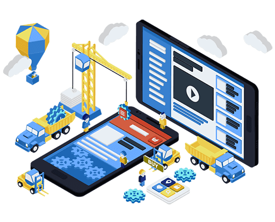

App DEVELOPMENT

Application development is the process of creating a computer program or a set of programs to
perform the different tasks that a business requires. From calculating monthly expenses to
scheduling sales reports, applications help businesses automate processes and increase efficiency.
Every app-building process follows the same steps: gathering requirements, designing prototypes,
testing, implementation, and integration.
Low-code custom application development empowers novice developers to build and implement apps
without having to acquire deep programming knowledge
It dramatically simplifies the app development process, masking all the programming that goes into
it and presenting users with ready-to-use, intuitive development tools These custom apps come to the
rescue where the one-size-fits-all dogma fails.Low-code custom application development empowers
novice developers to build and implement apps without having to acquire deep programming knowledge.
It dramatically simplifies the app development process, masking all the programming that goes into
it and presenting users with ready-to-use, intuitive development tools.

There are multiple types of apps created by developers, such as native apps, HTML5 apps, and hybrid
apps. A typical app uses a network connection to work with remote computing resources. Many
companies opt to invest in custom app development to either improve work efficiency and streamline
internal processes or push their ideas to the open market.
When creating an app, developers must consider a variety of elements, such as screen size,
configurations, and hardware specifications. Each component of a mobile app must come together to
provide the end-user with a fast, clean, and easy-to-use interface design. Here are a few other
things you will want to consider during app development.
 This first stage involves completing a business analysis and creating a mobile strategy. A business
analysis, marketer and project manager are usually involved.
In this next stage, a technical writer is responsible for describing all technical details and
requirements.
In the prototyping phase, the sketch, wireframes and app skins are created. This is usually
completed by a UX/UI designer.
Developing
This phase includes front-end and back-end coding segments and is performed by developers.
This first stage involves completing a business analysis and creating a mobile strategy. A business
analysis, marketer and project manager are usually involved.
In this next stage, a technical writer is responsible for describing all technical details and
requirements.
In the prototyping phase, the sketch, wireframes and app skins are created. This is usually
completed by a UX/UI designer.
Developing
This phase includes front-end and back-end coding segments and is performed by developers.